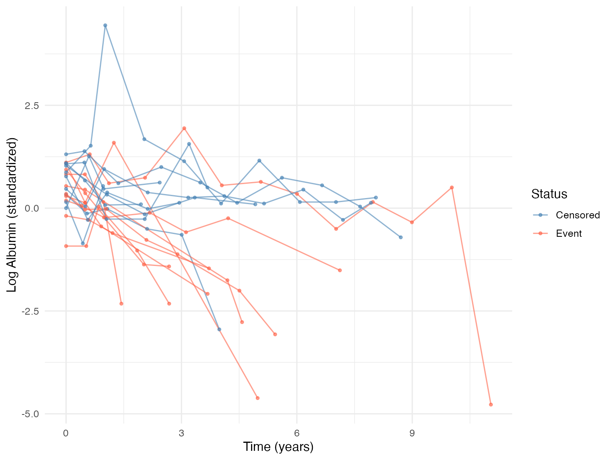
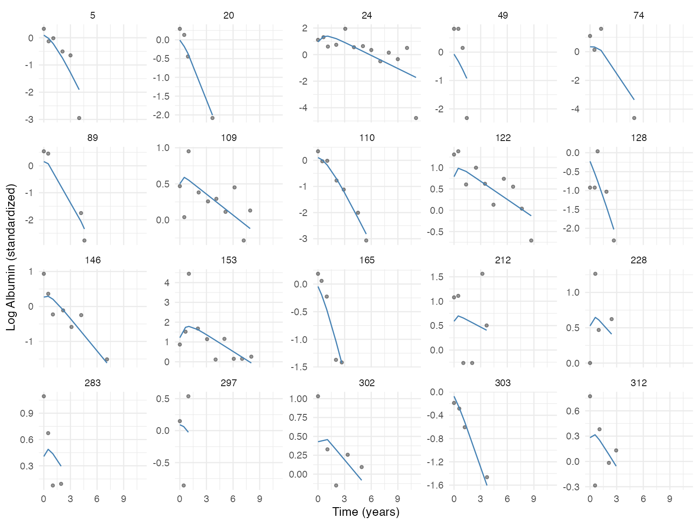

This vignette demonstrates a complete JointODE workflow using PBC (Primary Biliary Cirrhosis) serum albumin data from the JMbayes2 package. The workflow has four steps:
- Prepare and standardize data
- Select random effects structure via
MarginalODE - Fit the joint model via
JointODE - Interpret and compare results
Step 1: Data Preparation
library(JointODE)
library(JMbayes2)
library(survival)
library(dplyr)
library(ggplot2)
survival_data <- pbc2.id |>
transmute(
id = as.integer(id), time = years, status = status2,
drug = as.numeric(drug == "D-penicil"),
age = scale(age)[, 1],
sex = as.numeric(sex == "female")
)
longitudinal_data <- pbc2 |>
transmute(id = as.integer(id), time = year, observed = log(albumin)) |>
left_join(survival_data |> select(id, drug, age, sex), by = "id")
# Standardize: ODE parameters scale with the response
alb_mean <- mean(longitudinal_data$observed)
alb_sd <- sd(longitudinal_data$observed)
longitudinal_data$observed <- (longitudinal_data$observed - alb_mean) / alb_sd
cat(sprintf(
"Subjects: %d | Events: %d (%.0f%%) | Observations: %d\n",
nrow(survival_data), sum(survival_data$status),
100 * mean(survival_data$status), nrow(longitudinal_data)
))## Subjects: 312 | Events: 140 (45%) | Observations: 1945
set.seed(42)
sample_ids <- sample(unique(longitudinal_data$id), 20)
longitudinal_data |>
filter(id %in% sample_ids) |>
left_join(survival_data |> select(id, status), by = "id") |>
ggplot(aes(time, observed, group = id, color = factor(status))) +
geom_line(alpha = 0.6) +
geom_point(size = 1, alpha = 0.6) +
scale_color_manual(
values = c("0" = "steelblue", "1" = "tomato"),
labels = c("Censored", "Event"), name = "Status"
) +
labs(x = "Time (years)", y = "Log Albumin (standardized)") +
theme_minimal(base_size = 12)
Step 2: Random Effects Selection with MarginalODE
The ODE is m''(t) + 2\xi\omega\, m'(t) + \omega^2 m(t) = f(t), with initial conditions m(0) = m_0, m'(0) = v_0. The formula uses two reserved keywords:
-
biomarker: frequency parameter (\omega^2, estimated aslog_omega2) -
velocity: damping parameter (2\xi\omega, estimated aslog_2xi_omega)
Random effects on initial states (m_{0,i}, v_{0,i}) are always included. We fit models at increasing complexity to find the right RE structure.
ctrl <- list(parallel = TRUE, verbose = 1)
# Level 0: fixed dynamics, random initial state only
mfit0 <- MarginalODE(
observed ~ biomarker + velocity + drug,
longitudinal_data,
control = ctrl
)
# Level 1: + random forcing intercept
mfit1 <- MarginalODE(
observed ~ biomarker + velocity + drug + (1 | id),
longitudinal_data,
control = ctrl
)
# Level 2a: + random frequency
mfit2a <- MarginalODE(
observed ~ biomarker + velocity + drug + (biomarker | id),
longitudinal_data,
control = ctrl
)
# Level 2b: + random damping
mfit2b <- MarginalODE(
observed ~ biomarker + velocity + drug + (velocity | id),
longitudinal_data,
control = ctrl
)
# Level 2c: + random frequency & damping
mfit2c <- MarginalODE(
observed ~ biomarker + velocity + drug + (biomarker + velocity | id),
longitudinal_data,
control = ctrl
)
fits <- list(mfit0, mfit1, mfit2a, mfit2b, mfit2c)
knitr::kable(data.frame(
Model = c(
"Level 0: fixed dynamics",
"Level 1: + random forcing",
"Level 2a: + random frequency",
"Level 2b: + random damping",
"Level 2c: + random freq & damp"
),
RE = c(
"(none)", "(1|id)", "(biomarker|id)",
"(velocity|id)", "(biomarker+velocity|id)"
),
n_RE = sapply(fits, function(f) ncol(f$random_effects)),
logLik = sapply(fits, `[[`, "logLik"),
AIC = sapply(fits, `[[`, "AIC"),
Converged = sapply(fits, function(f) f$convergence$converged)
), digits = 1, caption = "MarginalODE model comparison")| Model | RE | n_RE | logLik | AIC | Converged |
|---|---|---|---|---|---|
| Level 0: fixed dynamics | (none) | 2 | -2276.3 | 4566.7 | TRUE |
| Level 1: + random forcing | (1|id) | 3 | -2265.0 | 4544.0 | TRUE |
| Level 2a: + random frequency | (biomarker|id) | 3 | -2276.1 | 4566.2 | TRUE |
| Level 2b: + random damping | (velocity|id) | 3 | -2238.6 | 4491.2 | TRUE |
| Level 2c: + random freq & damp | (biomarker+velocity|id) | 4 | -2238.5 | 4491.0 | TRUE |
Selecting the Best Model
converged_idx <- which(sapply(fits, function(f) f$convergence$converged))
aics <- sapply(fits[converged_idx], `[[`, "AIC")
best_idx <- converged_idx[which.min(aics)]
best_marginal <- fits[[best_idx]]
cat(sprintf(
"Selected: Level %s (AIC = %.1f)\n",
c("0", "1", "2a", "2b", "2c")[best_idx], best_marginal$AIC
))## Selected: Level 2c (AIC = 4491.0)
summary(best_marginal)##
## Call:
## MarginalODE(formula = observed ~ biomarker + velocity + drug +
## (biomarker + velocity | id), data = longitudinal_data, control = ctrl)
##
## Data Descriptives:
## Number of Observations: 1945
## Number of Subjects: 312
##
## AIC BIC logLik
## 4491.029 4517.230 -2238.515
##
## Coefficients:
## Estimate Std. Error z value Pr(>|z|)
## log_omega2 -10.8855 56.6330 -0.192 0.84758
## log_2xi_omega 0.8937 0.2816 3.174 0.00151 **
## (Intercept) -0.3651 0.0919 -3.973 7.08e-05 ***
## drug -0.0301 0.0569 -0.529 0.59693
## initial_biomarker 0.2337 0.0429 5.448 5.10e-08 ***
## initial_velocity 0.2176 0.1928 1.129 0.25894
## ---
## Signif. codes: 0 '***' 0.001 '**' 0.01 '*' 0.05 '.' 0.1 ' ' 1
##
## ODE System Characteristics:
## Estimate Std. Error z value Pr(>|z|)
## omega (natural frequency) 0.0043 0.1225 0.035 0.972
## xi (damping ratio) 282.3847 7997.6591 0.035 0.972
##
## Measurement Error SD: 0.614764
## Convergence: Converged (relative convergence (4))The best model (Level 2b) adds random damping. The large damping ratio (\xi \gg 1) indicates overdamped dynamics: albumin declines monotonically rather than oscillating, consistent with PBC biology.
RE Variance Diagnostics
re_sigma <- best_marginal$random_effect_sigma
knitr::kable(
data.frame(RE = rownames(re_sigma), SD = round(sqrt(diag(re_sigma)), 4)),
caption = "Random effect standard deviations"
)| RE | SD | |
|---|---|---|
| initial_biomarker | initial_biomarker | 0.5027 |
| initial_velocity | initial_velocity | 0.5427 |
| log_omega2 | log_omega2 | 0.0992 |
| log_2xi_omega | log_2xi_omega | 0.8830 |
Step 3: Joint Model
We now link the longitudinal trajectories to survival using
JointODE. The init = "marginal" option
warm-starts from the MarginalODE fit.
# Use the formula from the best marginal model
selected_formula <- list(
observed ~ biomarker + velocity + drug,
observed ~ biomarker + velocity + drug + (1 | id),
observed ~ biomarker + velocity + drug + (biomarker | id),
observed ~ biomarker + velocity + drug + (velocity | id),
observed ~ biomarker + velocity + drug + (biomarker + velocity | id)
)[[best_idx]]
fit <- JointODE(
longitudinal_formula = selected_formula,
survival_formula = Surv(time, status) ~ drug + age + sex,
longitudinal_data = longitudinal_data,
survival_data = survival_data,
init = "marginal",
control = list(parallel = TRUE, verbose = 1)
)## Longitudinal:
## Coefficients: [-10.885, 0.894, -0.365, -0.03]
## Initial state: [0.234, 0.218]
## Survival:
## Hazard: [-1.162, -0.621, 0.064, 0.311, -0.506]
## Baseline: [-2.817, -2.593, -2.573, -2.53]
## Variance:
## sigma_e: 0.6148
## Random SD: [0.444, 0.478, 0.01, 0.573]
summary(fit)##
## Call:
## JointODE(longitudinal_formula = selected_formula, survival_formula = Surv(time,
## status) ~ drug + age + sex, longitudinal_data = longitudinal_data,
## survival_data = survival_data, init = "marginal", control = list(parallel = TRUE,
## verbose = 1))
##
## Data Descriptives:
## Longitudinal Process Survival Process
## Number of Observations: 1945 Number of Events: 140 (45%)
## Number of Subjects: 312
##
## AIC BIC logLik
## 5327.164 5424.482 -2637.582
##
## Coefficients:
## Longitudinal Process: Second-Order ODE Model
## Estimate Std. Error z value Pr(>|z|)
## log_omega2 -10.8860 33.3174 -0.327 0.74387
## log_2xi_omega 0.9862 0.4059 2.429 0.01513 *
## (Intercept) -0.5197 0.1970 -2.639 0.00833 **
## drug -0.0141 0.0793 -0.178 0.85856
## ---
## Signif. codes: 0 '***' 0.001 '**' 0.01 '*' 0.05 '.' 0.1 ' ' 1
##
## ODE System Characteristics:
## Estimate Std. Error z value Pr(>|z|)
## omega (natural frequency) 0.0043 0.0721 0.06 0.952
## xi (damping ratio) 309.8259 5162.8946 0.06 0.952
##
## Survival Process: Proportional Hazards Model
## Estimate Std. Error z value Pr(>|z|)
## value -1.1230 0.1568 -7.164 7.84e-13 ***
## velocity -0.9346 0.5383 -1.736 0.08251 .
## drug -0.0361 0.2019 -0.179 0.85809
## age 0.3206 0.1072 2.990 0.00279 **
## sex -0.7521 0.2525 -2.978 0.00290 **
## ---
## Signif. codes: 0 '***' 0.001 '**' 0.01 '*' 0.05 '.' 0.1 ' ' 1
##
## Baseline Hazard: B-spline with 4 basis functions
## (Coefficients range: [-3.210, -2.706] )
##
## Initial State: Population Mean
## Estimate Std. Error z value Pr(>|z|)
## initial_biomarker 0.2406 0.0425 5.665 1.47e-08 ***
## initial_velocity 0.2484 0.2117 1.174 0.241
## ---
## Signif. codes: 0 '***' 0.001 '**' 0.01 '*' 0.05 '.' 0.1 ' ' 1
##
## Variance Components:
## Measurement Error SD: 0.608874 (SE: 0.011445)
## Random Effect Covariance Matrix:
## initial_biomarker initial_velocity log_omega2 log_2xi_omega
## initial_biomarker 0.229128 0.343367 0.001375 0.222152
## initial_velocity 0.343367 0.563947 0.002915 0.428484
## log_omega2 0.001375 0.002915 0.000100 0.007221
## log_2xi_omega 0.222152 0.428484 0.007221 0.941272
##
## Model Diagnostics:
## C-index (Concordance): 0.745
## Convergence: Converged (relative convergence (4))Step 4: Interpretation
ODE Dynamics
The summary reports \omega (natural frequency) and \xi (damping ratio) with delta-method standard errors:
summary(fit)$derived_params## Estimate Std. Error z value Pr(>|z|)
## omega (natural frequency) 4.326493e-03 7.207376e-02 0.06002869 0.9521328
## xi (damping ratio) 3.098259e+02 5.162895e+03 0.06001012 0.9521476Survival Association
The hazard model links biomarker value and velocity to event risk:
\log h_i(t) = \alpha_\text{value}\, m_i(t) + \alpha_\text{velocity}\, m_i'(t) + W_i'\beta + \text{baseline}
JointODE provides both associations by construction, without needing
to specify slope() as in JMbayes2.
Predicted Trajectories
pred <- predict(fit)
pred |>
mutate(id = as.integer(id)) |>
filter(id %in% sample_ids) |>
left_join(
longitudinal_data |> select(id, time, observed),
by = c("id", "time")
) |>
ggplot(aes(x = time)) +
geom_point(aes(y = observed), alpha = 0.4, size = 1) +
geom_line(aes(y = biomarker), color = "steelblue") +
facet_wrap(~id, scales = "free_y") +
labs(x = "Time (years)", y = "Log Albumin (standardized)") +
theme_minimal(base_size = 10)
## C-index: 0.745Comparison with Alternative Approaches
JMbayes2
cox_fit <- coxph(
Surv(time, status) ~ drug + age + sex,
data = survival_data, x = TRUE
)
lme_fit <- lme(
observed ~ ns(time, 3) * drug,
random = ~ time | id,
data = longitudinal_data
)
jm_val <- jm(cox_fit, lme_fit,
time_var = "time",
functional_forms = list("observed" = ~ value(observed))
)
jm_both <- jm(cox_fit, lme_fit,
time_var = "time",
functional_forms = list(
"observed" = ~ value(observed) + slope(observed)
)
)Hazard Coefficient Comparison
ode_cf <- coef(fit)
ode_se <- sqrt(diag(vcov(fit)))
cox_s <- summary(cox_td)$coefficients
jv <- summary(jm_val)$Survival
jb <- summary(jm_both)$Survival
f <- function(est, se) sprintf("%.3f (%.3f)", est, se)
knitr::kable(
data.frame(
Parameter = c(
"Biomarker level", "Biomarker velocity",
"Drug", "Age", "Sex"
),
JointODE = c(
f(ode_cf["hazard:value"], ode_se["hazard:value"]),
f(ode_cf["hazard:velocity"], ode_se["hazard:velocity"]),
f(ode_cf["hazard:drug"], ode_se["hazard:drug"]),
f(ode_cf["hazard:age"], ode_se["hazard:age"]),
f(ode_cf["hazard:sex"], ode_se["hazard:sex"])
),
Ext.Cox = c(
f(cox_s["observed", 1], cox_s["observed", 3]), "--",
f(cox_s["drug", 1], cox_s["drug", 3]),
f(cox_s["age", 1], cox_s["age", 3]),
f(cox_s["sex", 1], cox_s["sex", 3])
),
JM.value = c(
f(jv["value(observed)", 1], jv["value(observed)", 2]), "--",
f(jv["drug", 1], jv["drug", 2]),
f(jv["age", 1], jv["age", 2]),
f(jv["sex", 1], jv["sex", 2])
),
JM.value.slope = c(
f(jb["value(observed)", 1], jb["value(observed)", 2]),
f(jb["slope(observed)", 1], jb["slope(observed)", 2]),
f(jb["drug", 1], jb["drug", 2]),
f(jb["age", 1], jb["age", 2]),
f(jb["sex", 1], jb["sex", 2])
)
),
align = c("l", "r", "r", "r", "r"),
caption = "Hazard coefficients: estimate (SE)"
)| Parameter | JointODE | Ext.Cox | JM.value | JM.value.slope |
|---|---|---|---|---|
| Biomarker level | -1.123 (0.157) | -0.880 (0.054) | -1.499 (0.135) | -1.247 (0.218) |
| Biomarker velocity | -0.935 (0.538) | – | – | -2.640 (1.684) |
| Drug | -0.036 (0.202) | 0.086 (0.181) | 0.004 (0.252) | 0.042 (0.263) |
| Age | 0.321 (0.107) | 0.363 (0.094) | 0.330 (0.107) | 0.355 (0.115) |
| Sex | -0.752 (0.253) | -0.578 (0.229) | -0.586 (0.256) | -0.604 (0.260) |
The extended Cox model cannot estimate a velocity effect and is
susceptible to bias from measurement error. JMbayes2 requires explicitly
specifying slope() as a functional form, while JointODE
provides both associations by construction.
## R version 4.5.3 (2026-03-11)
## Platform: aarch64-apple-darwin25.3.0
## Running under: macOS Tahoe 26.4
##
## Matrix products: default
## BLAS: /opt/homebrew/Cellar/openblas/0.3.32/lib/libopenblasp-r0.3.32.dylib
## LAPACK: /opt/homebrew/Cellar/r/4.5.3/lib/R/lib/libRlapack.dylib; LAPACK version 3.12.1
##
## locale:
## [1] en_US.UTF-8/en_US.UTF-8/en_US.UTF-8/C/en_US.UTF-8/en_US.UTF-8
##
## time zone: Asia/Shanghai
## tzcode source: internal
##
## attached base packages:
## [1] splines stats graphics grDevices datasets utils methods
## [8] base
##
## other attached packages:
## [1] ggplot2_4.0.2 dplyr_1.2.0 JMbayes2_0.6-0 GLMMadaptive_0.9-7
## [5] nlme_3.1-168 survival_3.8-6 JointODE_0.2.0
##
## loaded via a namespace (and not attached):
## [1] gtable_0.3.6 TMB_1.9.21 xfun_0.57 bslib_0.10.0
## [5] htmlwidgets_1.6.4 lattice_0.22-9 vctrs_0.7.2 tools_4.5.3
## [9] generics_0.1.4 parallel_4.5.3 tibble_3.3.1 pkgconfig_2.0.3
## [13] Matrix_1.7-5 RColorBrewer_1.1-3 S7_0.2.1 desc_1.4.3
## [17] lifecycle_1.0.5 survC1_1.0-3 compiler_4.5.3 farver_2.1.2
## [21] splines2_0.5.4 textshaping_1.0.5 htmltools_0.5.9 sass_0.4.10
## [25] yaml_2.3.12 pillar_1.11.1 pkgdown_2.2.0 jquerylib_0.1.4
## [29] tidyr_1.3.2 MASS_7.3-65 cachem_1.1.0 abind_1.4-8
## [33] parallelly_1.46.1 tidyselect_1.2.1 digest_0.6.39 purrr_1.2.1
## [37] labeling_0.4.3 fastmap_1.2.0 grid_4.5.3 cli_3.6.5
## [41] magrittr_2.0.5 patchwork_1.3.2 withr_3.0.2 scales_1.4.0
## [45] rmarkdown_2.30 matrixStats_1.5.0 otel_0.2.0 gridExtra_2.3
## [49] ragg_1.5.2 coda_0.19-4.1 evaluate_1.0.5 knitr_1.51
## [53] viridisLite_0.4.3 rlang_1.2.0 Rcpp_1.1.1 glue_1.8.0
## [57] renv_1.2.0 jsonlite_2.0.0 R6_2.6.1 systemfonts_1.3.2
## [61] fs_2.0.1